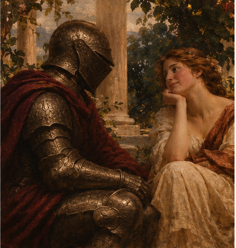
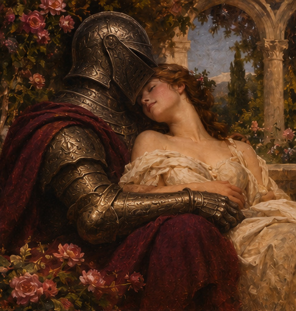
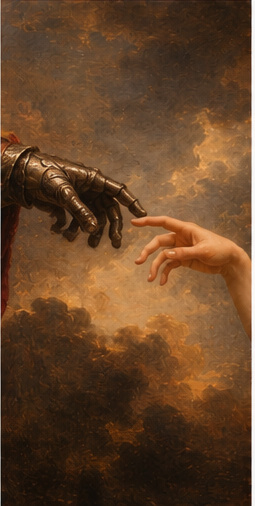
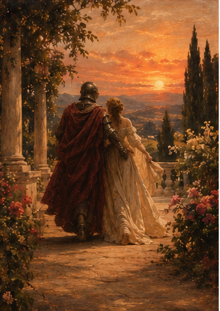
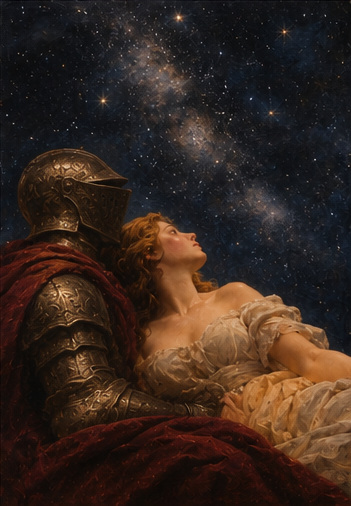

"Se o universo me oferecesse infinitas possibilidades, ainda haveria uma parte de mim procurando por você."

Existem bilhões de pessoas neste mundo.
Milhões de caminhos, encontros e possibilidades.
E, entre tantas histórias que poderiam ter
acontecido, a vida permitiu que a minha
cruzasse com a sua.
Talvez tenha sido apenas uma coincidência.
Mas, se eu pudesse voltar no tempo,
escolheria conhecer você outra vez.

O mundo nem sempre é silencioso.
Existem dias difíceis, pensamentos
confusos e momentos que parecem
não ter fim.
Mas há algo diferente quando estou
ao seu lado.
Não preciso que tudo seja perfeito.
Às vezes, um sorriso seu ou uma
conversa simples já transforma
completamente o meu dia.
"Talvez o amor não seja encontrar alguém perfeito, mas descobrir alguém com quem até o imperfeito se torna bonito."

Eu poderia falar sobre a sua beleza.
Sobre o seu sorriso.
Sobre o quanto gosto de olhar para você.
Mas seria pouco.
Porque existem pequenos detalhes
no seu jeito que talvez você
nem perceba.
E são justamente essas pequenas coisas
que fazem você ser alguém tão especial
para mim.

Eu não sei exatamente o que
o futuro guarda para nós.
Não posso prometer dias perfeitos
nem uma vida sem dificuldades.
Mas posso dizer que gostaria
de descobrir o amanhã com você.
Criar lembranças, compartilhar
conquistas e transformar momentos
simples em histórias que um dia
vamos querer recordar.

Não porque eu precise de alguém
para completar minha vida.
Mas porque gosto da pessoa que
sou quando estamos juntos.
Porque gosto da sua companhia,
das nossas conversas e da
possibilidade de existir um nós.
E, se você também sentir que
vale a pena, eu gostaria de
continuar escolhendo você.
Existe uma última coisa que eu gostaria de te dizer.
Se você chegou até aqui, significa que leu um pequeno pedaço de tudo aquilo que eu sinto e nem sempre consigo colocar em palavras.
Eu não criei isso para te convencer de nada. Criei porque existem sentimentos que merecem ser expressos com carinho.
Eu gosto de você. Gosto de quem você é, dos momentos que compartilhamos e daquilo que ainda podemos descobrir um sobre o outro.
Não sei quantas páginas nossa história terá. Mas, se você quiser, eu adoraria escrever as próximas ao seu lado.
Com carinho,
alguém que escolheria você. ❤️